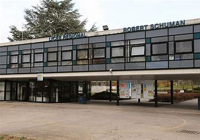

Le lycée Robert Schuman de Metz est un établissement réputé pour ses formations technologiques et professionnelles, notamment en informatique, électronique et réseaux. C'est ici que j'effectue mon BTS SIO, spécialité SISR.
Le BTS Services Informatiques aux Organisations est un diplôme en deux ans permettant de se former aux métiers de l’informatique. Il comporte deux spécialités : SISR (réseaux et systèmes) et SLAM (développement).